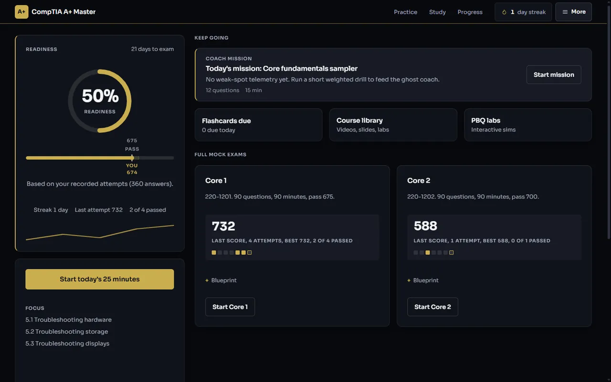
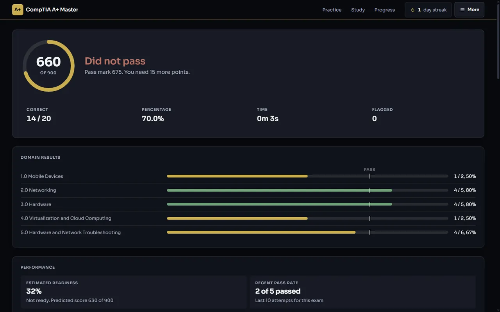
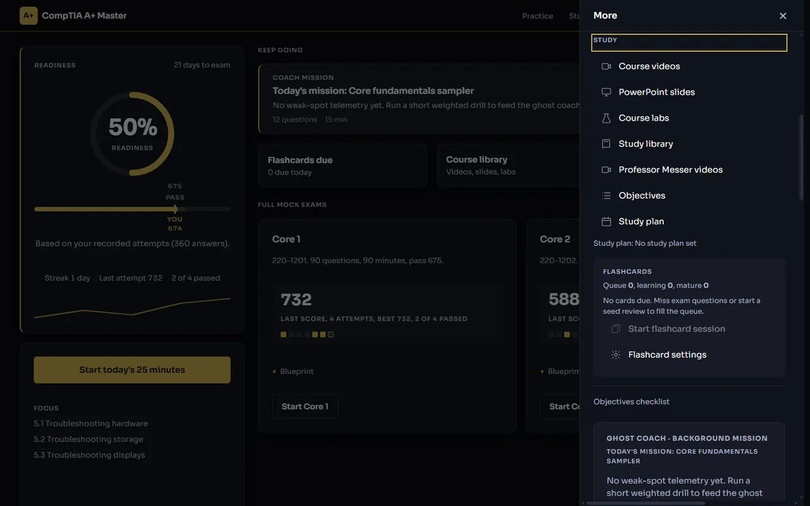
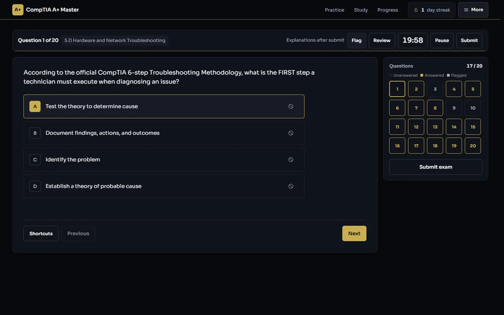
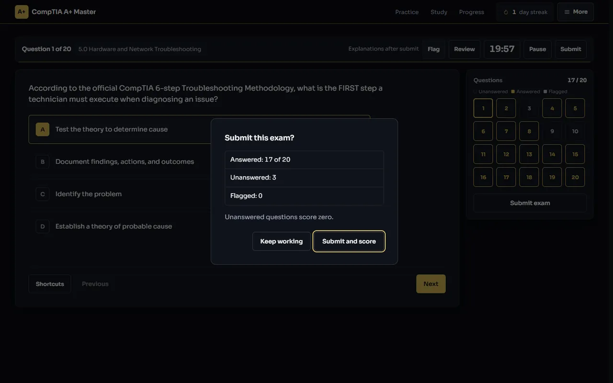

Know your A+ score before you pay for the voucher.
Clariora is a 90 question, 90 minute exam simulator that scores you on the real 100 to 900 scale against the real pass marks, then shows you exactly which objectives to fix. 1,130 explained questions. Free, no account, works offline.
Runs in your browser. Nothing to sign up for. Source code under AGPL-3.0.

- 1,130questions, every one with an explanation and a note on why each wrong option is wrong
- 636 and 494questions for Core 1 and Core 2, enough for five fresh mocks per core before any repeat
- 675 and 700the real pass marks on the real 100 to 900 scale, weighted by the official domains
- 137Professor Messer videos indexed against the objective each one teaches
- AGPL-3.0open source, tests run on every commit, version __APLUS_VERSION__ published on GitHub
Built for people who have to pass, not people who like studying.
You are moving into datacentre or desktop support and the vouchers cost about 500 USD for both cores.
Failing a sitting costs you money and a month. You do not need more questions. You need to know, in numbers, whether you would pass today.
- Scaled score and pass or fail after every mock, exactly as the test centre would report it
- Readiness by sub-objective, so you stop re-reading chapters you already know
- Works on the train, in the break room, and on a PC with no internet

You run an A+ cohort and need proof that learners did the work, not a spreadsheet of self-reported hours.
Every session is written to a local hash-chained ledger. It cannot be edited after the fact, and it exports as evidence you can hand to a course sponsor.
- Tamper-evident record of every mock, drill and review session
- Question bank validated against the official blueprint strings and objective codes
- Deploy as a website, an installer, or a portable executable on locked-down lab machines

You are putting a junior through A+ on company time and want to see progress without nagging.
Readiness is a single number per core, backed by a breakdown of every objective. Ask for the export and you get a signed record, not a promise.
- One readiness figure per core, updated after every session
- No subscription to manage and no user accounts to offboard
- Runs offline on the workshop PC; nothing leaves the machine unless you turn sync on
Most A+ practice tells you a percentage. The exam does not use one.
"I have done 300 practice questions and I still do not know if I would pass."
Every mock is 90 questions sampled to the official domain weights and scored from 100 to 900 against 675 or 700. You get the same verdict the test centre would give.
"The question pack just shows the right letter. I end up memorising answers."
Every question carries a full explanation and a line on why each distractor is wrong, so a miss teaches the concept, not the letter.
"My study app wants a subscription and a Wi-Fi signal."
Clariora installs as an offline app on Windows, Linux and the browser. No account, no monthly fee, no phone-home.
"I keep re-reading the whole book because I do not know which bits I am weak on."
The readiness score is computed per sub-objective across both blueprints. Weak objectives go to the top of your daily plan and into spaced repetition.
The difference is in what it measures, not how many questions it has.
| What you get | Typical practice test pack | Clariora |
|---|---|---|
| Score | Percentage correct | Scaled 100 to 900 against the real pass mark, weighted by domain |
| Wrong answers | Correct option shown | Explanation plus why each distractor is wrong |
| Weak spots | Score per domain, sometimes | Readiness per sub-objective, fed into the daily plan and spaced repetition |
| Question types | Mostly single choice | Single, multiple, matching, ordering and performance-based labs |
| Offline | Usually browser only | Installable web app, Windows and Linux desktop builds |
| Proof of work | None | Hash-chained local ledger, exportable for instructors and employers |
| Source code | Closed | Public under AGPL-3.0, so you can check how it scores you |
Three steps. The first one takes twenty minutes.
-
Open the app
In the browser or as a desktop install. There is no account to create and nothing to configure.
-
Take the 20 question diagnostic
A mixed Core 1 and Core 2 placement under exam conditions. It gives you a first readiness score and a list of weak objectives.
-
Follow the daily plan until readiness says go
Drill the weak objectives, review with spaced repetition, and sit full 90 in 90 mocks. When the scaled score clears the pass mark consistently, book the exam.
Everything the exam will throw at you, with the answer key you wish the book had.
Five fresh mocks per core
636 Core 1 and 494 Core 2 questions mean five full exams each before anything repeats. Flag for review, strike distractors, pause and resume.
Every miss explained
A full explanation and a distractor analysis on all 1,130 questions. Review is never limited, even on the free tier when limits arrive.
Study tools that target the gap
Objective tracker, a study library built from the blueprints, spaced repetition for ports and commands, and a video index for each objective.
A coach when you ask for one
Ghost Coach explains a question in plain language on request. Optional, off by default, and it uses your own Groq key so we never see your data.
What a mock exam looks like from start to score.
These are the actual screens from the current Windows build, not mockups.


Free today. One payment later, never a subscription.
Every feature is open while Clariora is in its 3.x releases. When the personal licence goes on sale, the free tier keeps daily limits instead of disappearing.
Free
Available nowEverything, with no limits, until the personal licence goes on sale. After that, the daily allowance below stays free forever.
- Full 20 question diagnostic every day
- 20 practice questions, 20 flashcards and one lab per day once limits arrive
- Unlimited review of every explanation, always
- No account, no card, no email
Personal licence
PlannedOne key, pasted into the app once, unlocks everything on that PC for good. No renewal, no server check, no phone-home.
- Unlimited practice questions, flashcards and labs
- Full 90 question timed mocks for Core 1, Core 2 and mixed
- Ghost Coach with explain-on-miss
- Works offline; the key is verified on your machine
Academy and team
By arrangementFor instructors and employers putting a group through A+. Keys for each seat, ledger evidence exports, and help deploying to lab machines.
- Seat keys issued per learner
- Signed progress exports for sponsors and managers
- Installer, portable and web deployment guidance
Telegram AI Pro
Live on TelegramInstant activation inside Telegram. Includes 14-day practice trial with 5 daily free Groq AI sessions and 3 Pro model preview tokens.
- Unlimited Pro AI: NVIDIA NIM 70B, Ollama R1 and OpenRouter Claude
- Zero install: launch instantly on iOS, Android, and Telegram Desktop
- Telegram Stars (Apple or Google Pay) or TON Connect 2.0 Web3 wallet
- Cryptographic Soulbound SBT score certification on TON
There is no yearly plan because there is no subscription. Prices are in US dollars.
New product. Inspectable claims.
Clariora does not have a wall of customer quotes yet. Until the first learners write their own, trust the parts you can verify yourself.
Open source under AGPL-3.0
The scoring engine, question validator and daily-plan logic are public. You can read how a mock becomes a 100 to 900 score before you rely on it.
Tests on every commit
Version __APLUS_VERSION__ ships with automated checks on the bank, the entitlements and this landing page. Broken claims fail the build.
No account and no phone-home
Progress stays on your device. Telemetry and cloud sync exist in the code and both are off by default. Nothing leaves the machine unless you turn them on.
Official pass marks, real screenshots
Mocks use 675 for Core 1 and 700 for Core 2 on the 100 to 900 scale. The walkthrough images are from the current Windows build, not mockups.
Things people ask before they open it.
Is Clariora new? Does anyone use it yet?
Is it really free?
Do I need an account?
How close is the scoring to the real exam?
How many questions are there, and will they repeat?
Does it cover the current 220-1201 and 220-1202 objectives?
Does it work offline?
Which platforms are supported?
What is the ledger, and why would an instructor care?
What is Ghost Coach and does it cost anything?
Are the Professor Messer videos included?
When does the personal licence go on sale, and what changes?
Can I read the source code?
What happens to my data?
Is Clariora affiliated with CompTIA?
Find out where you stand in twenty questions.
The diagnostic runs under exam conditions and gives you a readiness score and a list of weak objectives. No account, no card, no email. If it tells you that you are ready, book the exam.